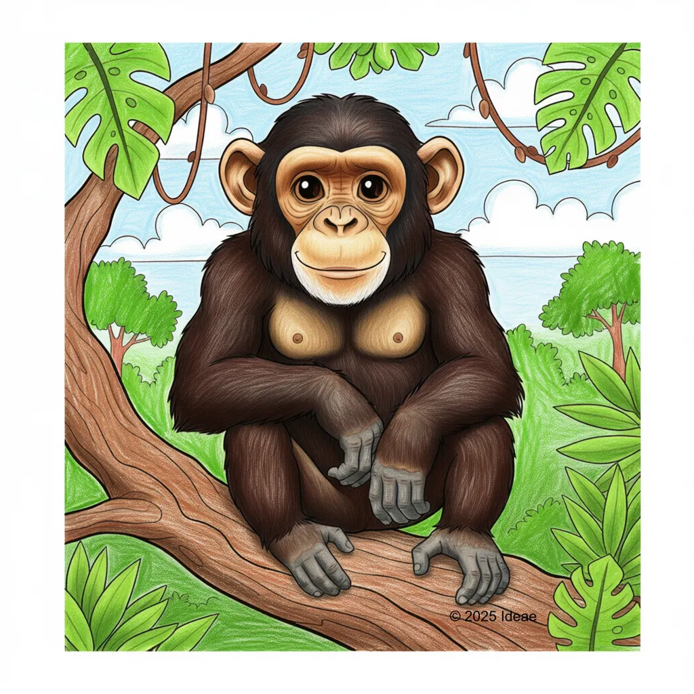

Chimpanzee
Pan troglodytes

Key Characteristics
- Chimpanzees are one of our closest relatives; they share about 98% of their DNA with humans!
- They are very intelligent and use 'tools' like stones to crack nuts and sticks to catch bugs.
- Chimps communicate with each other using many different sounds, gestures, and facial expressions.
Peculiar Facts (Fun Facts!)
- "They build cozy nests high in the trees every single night to sleep safely.
- Chimpanzees can learn sign language and even play video games with practice.
- Their hands and feet are designed to easily grab things, helping them swing through trees